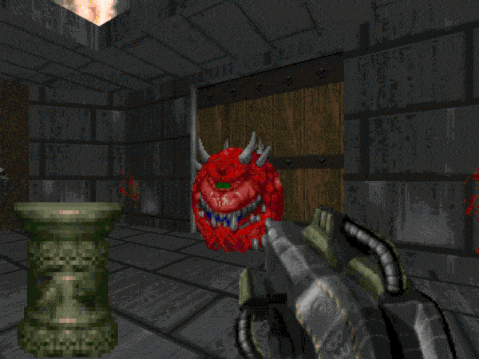

Programas con Assambler
Assembler es un lenguaje de programación de bajo nivel que se usa para escribir instrucciones directas para el procesador de un computador. Algunos programas que se hicieron con assembler son:
Assembler es un lenguaje muy poderoso, pero también muy complejo y específico de cada arquitectura. Por eso, se suele usar solo cuando se necesita un control muy preciso del hardware o un uso de recursos muy eficiente. Para la mayoría de las aplicaciones, se prefieren los lenguajes de alto nivel, que son más fáciles de leer, escribir y portar.
(Doom esta en todos lados)

Juega doom aqui: DOOM I - Juega en línea en SilverGames ��️